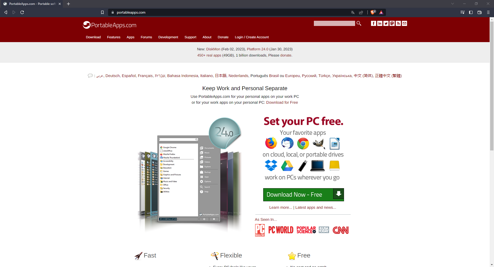
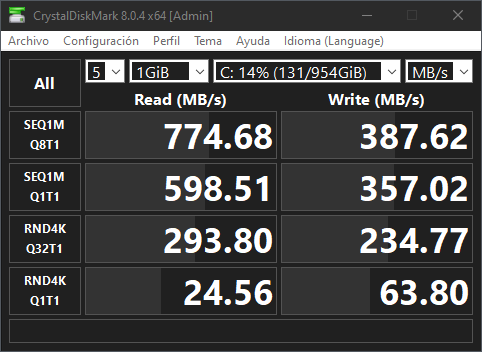
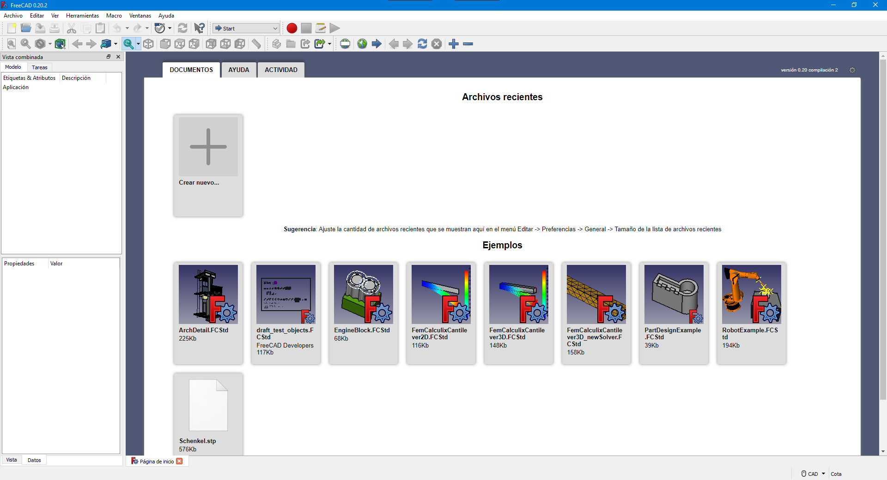

Recuerda que solo debemos descargar los programas de los lugares oficiales para evitar problemas de virus u otros bichos
En esta sesión descargaremos el software y haremos la instación en nuestra USB.
Necesitamos que la USB sea 3.0 o superior ya que de lo contrario corremos el riesgo de que se trabe el programa.
Pero antes vamos hacer unas pruebas de velocidad para comprobar que la USB cumple con los requisitos mínimos.
Sigue las indicaciones de tu docente para una instalación exitosa.
Lo primero a descargar es PortableApps
Vamos hacer la instalación como es de costumbre, con el clásico next, next, next, hasta finalizar el proceso.
Para probar nuestra USB vamos a instalar CristalDisKMark, dentro de portable apps buscamos, en gestionar apps, obtener más apps, por título, y buscamos CristalDiskMark y la instalamos.
En el chat del grupo comparte tu resultado con los datos de la memoria, marca y capacidad y si es tipo 2.0, 3.0, 3.1 o mayor; pregunta a tu docente como hacer una captura de pantalla.
Un ejemplo es como este:
Después de obtener los datos de nuestra memoria USB vamos a descargar el freeCad de la misma manera, desde portable apps, siguiendo el mismo procedimientos que usamos para la instalación de Cristal debes de lograr instalar FreeCad, el resultado debe de ser el siguiente al correr el programa
Felicidades ya lograste la instalación del programa, bienvenido al maravilloso mundo de dibujo técnico
En esta primera práctica vamos a utilizar el elemento gráfico mínimo que es el punto.
en esta segunda práctica vamos a generar una secuencia de puntos.
En esta tercera práctica vamos a dibujar una línea.
En esta práctica vamos a dibujar un rectangulo y todas sus variaciones.
Enunciado: Dibuja en Freecad un punto con las coordenadas 20, 20 mm, acota, captura pantalla, en teams, en tu bloc de notas, en sección de deberes, coloca el título tarea 001, inserta la captura y explica brevemente como obtuviste el resultado
Enunciado: Dibuja en Freecad una secuencia de 4 puntos con las coordenadas 0, 0 y con una separación de 5 mm entre cada punto en línea recta, acota, captura pantalla, en teams, en tu bloc de notas, en sección de deberes, coloca el título tarea 002, inserta la captura y explica brevemente como obtuviste el resultado
Enunciado: Dibuja en Freecad una línea que inicie en la cordenada 10, 10 y termine en la coordenada 40, 40, acota, captura la pantalla, en teams, en tu bloc de notas, en sección de deberes, coloca el título tarea 003 inserta la captura y explica brevemente como obtuviste el resultado
Enunciado: Dibuja en Freecad una rectángulo de manera libre, acota, captura la pantalla, en teams, en tu bloc de notas, en sección de deberes, coloca el título tarea 004 inserta la captura y explica brevemente como obtuviste el resultado
En esta práctica vamos a dibujar un cuadrado de 50mm de lado.
En esta práctica vamos a dibujar un pentágono de 60 mm de radio.
En esta práctica vamos a desarrollar un Héxagono de inscrito de 70mm de radio.
En esa práctica vamos a desarrollar un círculo
Enunciado: Dibuja un cuadrado con centro en la coordenada 0,0 y de lado igual a 30mm
Enunciado: Dibuja un pentágono inscrito en un círculo con radio igual a 100 mm
Enunciado: Dibuja Hexágono inscrito en un círculo; con radio igual a 90 mm
Enunciado: Dibuja un círculo con origen en el centro y radio igual a 80 mm